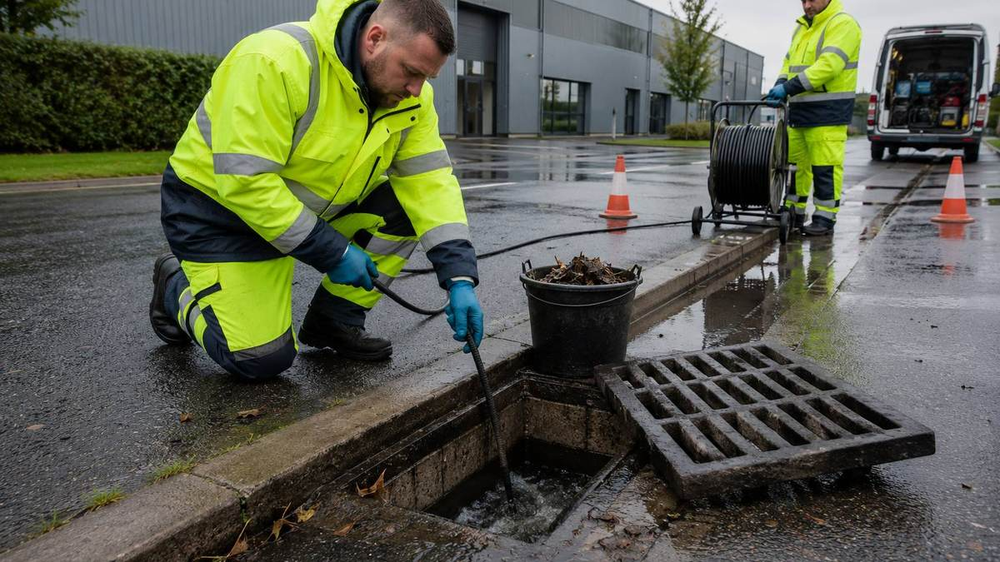

Home / Services
Drainage & gullies
Blockages cleared, gullies maintained and surface water managed - for commercial and residential property across Limerick and Kerry.
A blockage is a symptom, not the story
Clearing it gets the property working again tonight, and sometimes that genuinely is the whole job. But if the same gully backs up every autumn, or a section of pipe has collapsed or bellied, then clearing it again next year is money you are spending twice.
Surface water does most of the damage
Ireland does not lack rainfall. Blocked gullies, silted channels, shallow falls and undersized outfalls all end the same way - water going somewhere it should not, usually into a building. Most of it is preventable with maintenance that costs a fraction of the damage.
Autumn is the deadline
For commercial sites, scheduled gully and channel cleaning before leaf fall is dramatically cheaper than an emergency call-out and a flooded unit in November.
How the job runs
In order, and in writing.
Clear the immediate problem
Get the property functioning first.
Establish whether it will recur
If the history suggests a defect, we say so rather than leaving you to find out.
Survey if it is warranted
A CCTV survey shows exactly what is happening underground - root ingress, collapse, belly, or simply silt.
Repair the cause
Relining or excavation and replacement, scoped to what the survey found.
Set a maintenance interval
Where silt or leaves are the real driver, scheduled cleaning is the fix.
Before you get quotes
What determines the price.
We do not publish figures, because a figure without a site visit is a guess. These are the variables that actually move the number - worth understanding whoever you end up using.
Whether it is a clear or a repair
Jetting a blockage and excavating a collapsed pipe are different orders of work.
Access and depth
A gully in an open yard is straightforward. A run under a building or a finished driveway is not.
Whether a survey is needed
Surveys cost money and are not always justified - for a first-time blockage with an obvious cause, often they are not.
Reinstatement
If we have to break out tarmac or paving, putting it back properly is part of the job and part of the price.
Emergency versus scheduled
Out-of-hours attendance costs more, which is precisely why planned gully cleaning is worth scheduling.
When you don't need us
If a single sink or toilet is slow and everything else drains normally, the problem is almost certainly local to that fixture, not your drainage system - a plunger or a plumber will be cheaper and faster than us. Call us when the problem is outside, recurring, or affecting more than one fixture.
Questions
Straight answers.
Do you attend emergencies?
Yes, 24/7. For flooding or sewage backing up, call rather than using the form.
Why does the same drain keep blocking?
Recurring blockages usually mean an underlying defect - root ingress, a collapsed or bellied section, heavy silt, or a fall that is too shallow. A CCTV survey identifies which.
Do you do scheduled gully cleaning for commercial sites?
Yes, and for most sites the sensible interval is before autumn.
Do you cover rural properties?
Yes, throughout Limerick and Kerry including rural areas.
Will you have to dig up the driveway?
Not usually. Many defects can be relined without excavation. If digging is genuinely necessary we will explain why before anything starts.
Where we work
Limerick and Kerry.
Based at the Old Creamery Enterprise Centre in Ardagh, Co. Limerick, working across the county and into Kerry.
Limerick City · Ardagh · Adare · Newcastle West · Rathkeale · Askeaton · Croom · Kilmallock · Abbeyfeale · Foynes · Patrickswell · Castleconnell · Caherconlish · Bruff · Dromcollogher · Pallaskenry · Glin · Shanagolden · Athea · Annacotty · Murroe · Cappamore · Tralee · Killarney · Listowel · Castleisland · Abbeydorney · Tarbert
Tell us what needs doing.
Free site visit, free assessment, itemised quote. No obligation either way.
Something urgent? Call - 24/7 emergency call-outs.